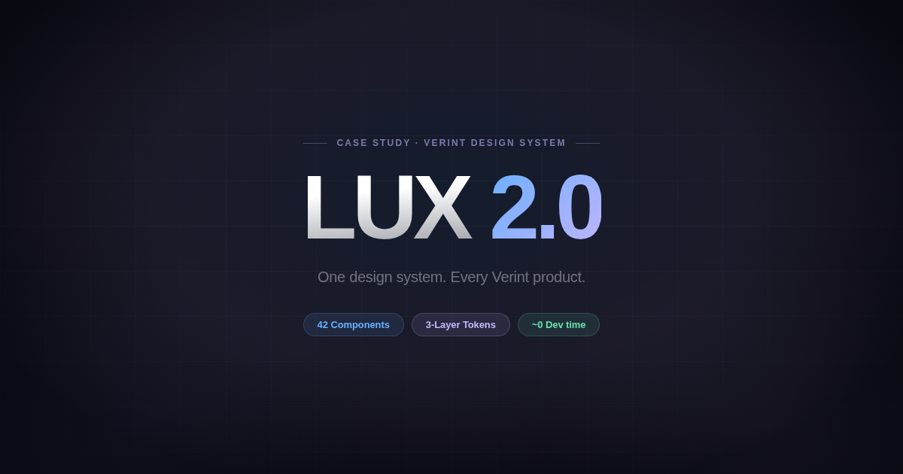
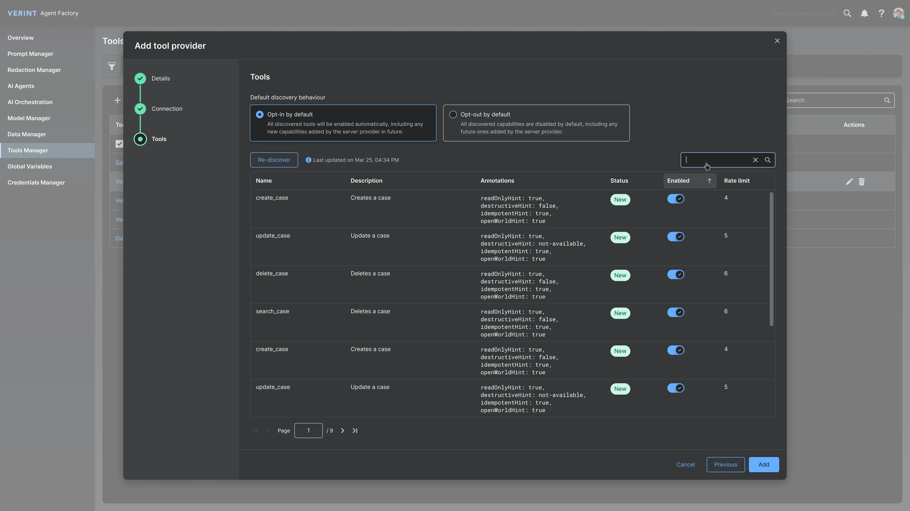

LUX 1.0 had seven years behind it — and it showed. No token structure, no dark mode, no responsive design, accessibility gaps across the board. Rebuilding it became one of Verint’s top-20 strategic goals. We started from scratch: new token architecture, a motion library, full accessibility coverage, and dark mode for the first time in Verint’s history.
This was my first time building a design system from scratch. I had to learn token architecture — primitives, semantics, components — while leading the project and the team in parallel. Setting the look & feel, running biweekly sprints with clear goals, presenting to steering committees, documenting everything.
The biggest technical challenge: connecting the system 100% to code. A designer changes a token in Figma — the change lands in Storybook and the GitHub repo automatically. No developer required, no waiting.
I structured the work into 2-week sprints — system architecture first, then tokenizing, then components and patterns. Alongside the component library, we built Verint’s first motion design library. Rather than running it solo, I formed a core team with weekly committee reviews to keep quality consistent and decisions moving.
LUX 2.0 is live across 40+ Verint products. Zero hardcoded values exist anywhere in the system. A designer makes a change in Figma, a pull request opens in under 60 seconds, the developer merges — and it’s live. No build steps, no developer paged for a color change.
Throughout the project we used AI for brainstorming how components and patterns should behave, for building Figma plugins that accelerated our workflow, and for QA across tokens and code to verify design and implementation stayed aligned. The token-sync plugin gets its own case study.